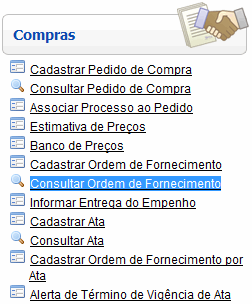
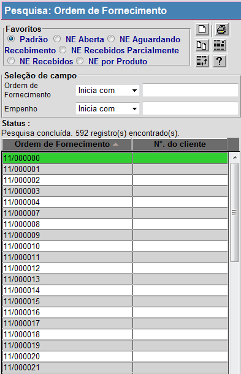
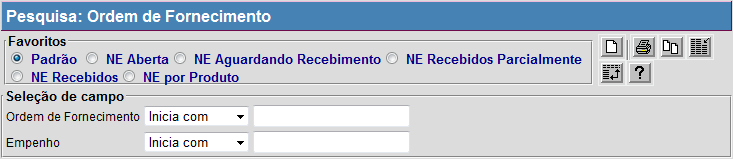

Consultar Ordem de Fornecimento [ Voltar ]Utilize esta tela para pesquisar e revisar ordens de fornecimento. O formulário "Consultar Ordem de Fornecimento" encontra-se dentro do menu "Compras". 
Ao clicar no formulário, o sistema exibirá a seguinte tela: 
1º Passo: para localizar o registro que deseja consultar, clique no botão  da barra de botões. da barra de botões. Na tela de pesquisa de registros de ordens de fornecimento, são exibidos os filtros "Ordem de Fornecimento" e "Empenho" para fácil localização do registro de fornecimento. Informe os dígitos iniciais da ordem ou os dígitos iniciais do empenho para que o sistema retorne automaticamente todas as transferências correspondentes. Para mais informações sobre outros recursos e funcionalidades da pesquisa, favor ver o manual Introdução ao Sistema. 
Assim que o registro desejado é localizado, selecione-o com um clique. Ele será aberto e serão exibidas suas informações atuais. Se desejar revisar a ordem de fornecimento, lembre-se de clicar no botão  para salvar o registro. para salvar o registro. |